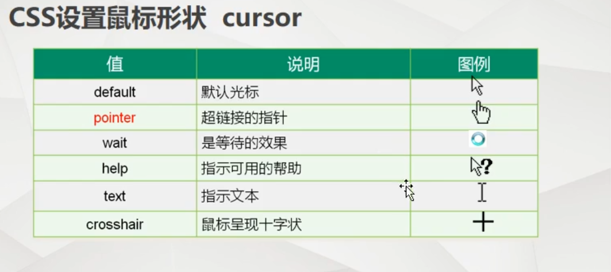
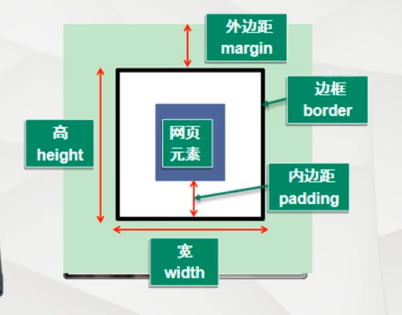
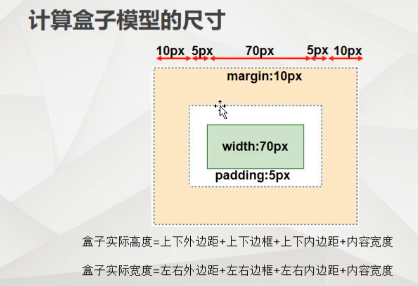
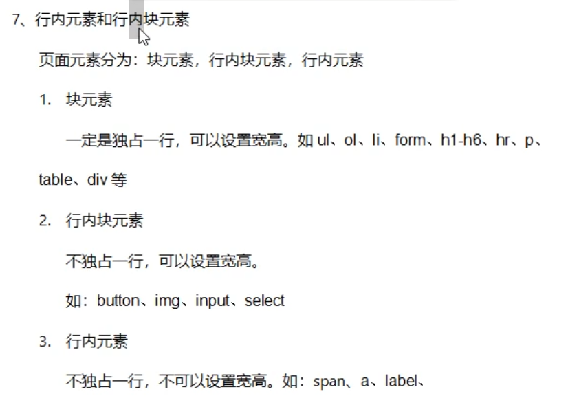

加油学习把。你会成功的。大大大大大大大大大大
斜着层叠样式表（Cascading style sheet）
选择器{
声明1；
声明2；
声明3
}
1.内联样式
在head中修改style
2.内部样式
直接在标签内修改。例如：3.外联样式
共两种：链接式；导入式。4.样式的优先级
内部>外联？内联
取决于再head中谁在下面，谁在下面谁的优先级就高。
属性,含义：
font-family 设置字体类型。字体的类型根据电脑上所有的字体而定。 例如：font-family：“隶书；”
font-size 设置字体大小，单位px（像素）例如：font-size：12px；
font-style 设置字体风格 例如：font-style：italic；
font-weight 设置字体粗细（100-900） 例如：font-weight：bold；font-weight：800；
font 在一个声明中设置所有字体属性，必须按照顺序排列：字体风格 粗细 大小 类型（允许缺少） 例如：font：italic bold 36px “宋体”
文本样式即将文本看作段落来编辑，和字体样式编辑方式一样。
color 设置文本颜色
text-alien：left right center 水平对齐方式。
对齐按照标签的宽度，如果没有宽度，就默认浏览器的宽度
line-height：a px；意义是在高度为a的一行中水平居中。
但在设置前得先设置行高，设置方法： height：a；
文本水平放置原理：计算机先计算得一行的中间位置，然后将文本水平居中放置在中线上。
文本背景颜色：backgroung-color: ;
文本装饰：上下中划线以及上中下划线的颜色：
text-decoration：underline （下划线）；overline（上划线）；line-though（中划线）
若想加颜色，直接在后面编辑颜色即可。
例如： text-decoration：undeiline green；
若不想要划线： text-line：none；即可。可用在超链接时，你不想超链接有下划线时，直接在超链接的a中编辑。
例如： 对超链接的标签进行编辑：a{ text-decoration：none； }
作用：当鼠标放上去会发生变化，如，有些超链接当鼠标放上去后 会变颜色
一、最常用：在style中 a:hover{ 字体样式，文本样式。中间以分号隔开}
这里的颜色是你想要的颜色。
这个意义是 鼠标移到超链接上时超链接会变成的颜色。
也可在这时的大括号内编辑 上下划线、
二、鼠标点击不放的超链接样式修改：
a:link{
修改字体样式，文本样式。中间以分号隔开。
}
三、链接被点击过后链接的样式修改：
a:visited{
修改字体样式，文本样式。中间以分号隔开。
}
四、鼠标点击不放，和二差不多
a:active{
修改字体样式，文本样式。中间以分号隔开。
}

编辑器中有一个快捷键：““.”+名称”等价于"< div class="名称">< / div>"
(一)、初识div
dif：div相当于一个容器可以容纳所有元素，便于整体处理。
可在div中设置“容器”的属性，如：宽、高、背景色等等。
(二)、div边线
border：x像素边框 solid （实线） 颜色
(三)、div背景图片
插入图片格式： backgroung：ur1（路径）；
ps：插入图片时，若插入的图片小于设定的div大小
则系统默认填充。若不想填充则
background：ur1（路径 ）no-repeat;
设置图片在div中的位置
background：ur1（路径） x轴 y轴;
对于x轴 x》0时，向右移动
对于y轴 y》0时，向下移动
还可以直接设置图片左右上下位置，
左右：left right center
上下：top bottom center
当图片大小大于div时，图片只会显示div大小的部分，在浏览器中微调到 理想的模式即可。
若想背景图片与背景颜色共存，则要把背景颜色写在图片下方，要不然背景图片会将背景颜色覆盖（不论大小）。
span标签是一个文字标签，相当于一个小括号。 span的添加不会对文字造成任何的改变，其目的在于： 将一段文字中的某一个、某几个文字或一段文字进行样式的更改。
编程时要遵循语义化，即 再合适的标签里，放合适的内容。
目的：1.方便后续维护人员维护。
2.方便网络爬虫能够准确地找到你网站的关键字。
爬虫工作是搜索你网站中的h1标签和head中的meat标签
例如：
列表分类：
无序列表：前面没有序号
有序列表：前面有序号（1、2、3，，，）
自定义列表
（一）无序列表
格式：
其中，ul声明式无序列表， li声明列表项 ul相当于一个容器，也可编辑属性
（二）有序列表
ol声明有序列表
格式：
ol前面的序号不仅可以正序，也可以逆序
序号也可以不是数字，用type编辑。
例如：
序号还可以从指定的数字开始
(三)最常用是ul
原因：ol前面序号不能编辑，且样式少。 大多采用ul然后编辑背景图片
ul每一列前面的小图标可以改变： 在ul编辑样式时 list-style-type:none;即去掉前方小图标 list-style-type 可用来编辑每一列前面的“图标”， 可以是数字，字母，希腊文字等等等（包含ol中的序号）
若是列表前的图标是一个图片，像是小三角等等的， 则需先将小图标削去，即list-style-type:none; (或直接 list-style：none；) 然后list-style-image:url(路径)
也可在削去小图标后对前面内容自行编辑，用span。 background:url(路径)
（四）自定义列表
dl表示自定义列表的容器
dt代表一级列表
dd表示二级列表
会自行错开显示
格式：
（一）、表格基本语法：
< table> 表格标签
< tr> 行
< td> 单元格
单元格1
< /td>
< td>
单元格2
< /td>
< /tr>
………………………………
< /table>
tr表示一行，tr下跟着的td就是列，下面跟着几个td就是几列。
（二）、合并单元格
列合并：首先确定合并行还是列，然后以左上角为标准做合并。
在td里样式修改 colspan="n"(n为合并的数量)。
合并后要将被合并的行删去。
行合并：仍然以左上角为标准，然后再td里修改样式，rowspan=“n”（n为合并的数量）
然后删去被合并的内容。
例如，合并第一列第二三行，再第一列中第二个td < td rowspan="2">然后删去第三行。
（一）、什么是表单
表单用于手机用户的信息， 是浏览器和用户之间沟通的桥梁。
就是再注册账号时，让我们输入手机号，输密码的小框框
（二）、标签格式
1.输入 让用户输入的 输入框的1.给文字部分加一个lable标签 for里面填 input取得id名
2.给input取一个id名
女：nn为checkbox 为复选框 即正方形小方框
秦始皇 4.按钮nn为botton 按钮
value为按钮里面的字
（2）或
5.下拉选择框
其中的name id value可以不要，这些是后台人员收集按钮信息用的，若仅是展示，可以删去。
且在框里默认显示第一个option内容。
也有默认选中 在其中加 selected="selected" 属性，则默认该属性。
< input type="text" maxlength="11"> maxlength后面的数字就是限制的字数
input也可以编辑样式（三）、表单的高级应用
1.隐藏域
type="hidden"
可以隐藏内容，即在浏览器中不显示，不占内存
例：< input type="text" hidden>输入密码 或
且hidden不止可以用在表单中，其他标签也可以。
只需在标签中加一个hidden即可。
例： < p hidden>哈哈哈< /p>
2.只读属性
readonly 代表只读属性，加在表单标签里即可
例： < input type="text" readonly>
3.禁用属性
用在后期用户判断。
即没有什么条件就不能使用什么功能。
disabed 用法同上
(一)、后代选择器
什么是后代？
后代即是标签嵌套里面被嵌套的内容
例：
这里的a就是li的后代，也就是ul的后代的后代
修改时，可以根据嵌套关系一层一层定位，然后修改样式
例： 若只想修改ul中li的a，可以直接在head中的style中 编辑 li a { 编辑样式 }
且是要是后代都发生变化，即不管是儿子，孙子，，，都变化
（二）、子代选择器
即只有儿子发生变化，其他后代不变化
格式： 标签1>标签2{ 编辑样式 }
（三）、并集选择器
即，将几个标签放在一起编辑样式
格式：
（四）、交集选择器
当内容里有相同的标签，有有相同的内容，想修改指定的样式，可采用这种方法
格式： 标签.类名（中间无空格）{ 编辑样式 }
（五）、属性选择器
只要具备某个属性，或者属性=属性值，就会被选中执行某些操作
格式： [属性]{ 编辑样式 } 或 [属性="属性值"]{ 编辑样式 } [属性^="字母/数字/其他"]{ 编辑样式 }（^=表示以什么开头） [属性 $="字母/数字/其他"]{ 编辑样式 }（$表示以什么结尾） [属性 *="字母/数字/其他"]{ 编辑样式 }（*代表只要包含）
（一）、什么是盒子模型
盒子模型是一个概念，，外面一个大容器，里面装有不同的一个个的小点容器。 是一种设计思路，按这样的思路来设计我们的网页。优点：利于后期维护。
（二）、计算方式
实际展示大小=元素大小 +边框 + 内边距


（三）、边框
1.四条边框同时设置
border：边框宽度 边框样式 边框颜色
边框样式：
solid 实线
dashed 虚线
double 双实线
dotted （圆）点状虚线
例子： border：1px solid red：
2.边框分开编辑
border-top：; 上边框
border-bottom：; 下边框
border-left：; 左边框
border-right：; 右边框
补充知识：通过边框将div元素变成圆形
要想将div元素变成圆形，则div的边框必须是正方形，然后设置border-radus：50%；
例：.名称（div的）{
height：200px；
width：200px；
border-radius：50%；
}
即可将div元素变成圆形。还可通过调节border-radius的大小来调节元素的外形，类似于圆角
使用div绘制三角形
理解边框在边角的构成方式：
当放大边框大小可见，边框在边角是对半分的，
且会扩大元素的边界长度。
例：若边界长宽都是200px，边框宽度是10px，则实际上的边界
长宽为220*220px。（长宽两边各增加10px）
故，当边框宽度远大于边界长宽时，可见的图形就是一个 被对角线分割的长方形。
若要做三角形，只需将需要的三角形对面的边框删去，其余的边框颜色透明即可
颜色透明：transparent
(四)、内外边距
边距有上下左右之分
内外边距是相对而言的
1.两个容器有包含关系
a包含b ，则b与a之间的边距对于a来说就是内边距，对于b就是外边距
2.两个容器没有相交关系，离得有些距离
则，他们之间的距离对于他们就是外边距
margin 外边距
padding 内边距
若是默认情况，则以左上角为基准（大小以当前页面大小为基准），（无其它操作）仅可以进行上左的边距编辑
3.几种赋值的方式
1.margin-top：100px；对某一个边距进行赋值
2.margin：100px；直接对margin赋值，默认对四边边距赋值（在当前基准下）
3.margin：200px 100px； 对margin赋两个值，则前面的表示上下 后面的表示左右
4.margin：400px 300px 200px 100px；对margin赋四个值，则是依次对上右下左进行赋值（从上按顺时针方向）
5.赋值不一定是数值，也可以是单词。例如：auto就是左右居中
3.内外边距对比
margin并不会改变元素本身大小
padding相当于在保证div大小不变的情况下，向外增大设定的大小。 相当于padding改变的是显示的大小。
可以在div样式中加一个box-sizing：border-box；
这就意味着边框，内边距都会算在div的大小中，即现实中的实际大小就是div的大小。
初始化css样式
写样式的时候，首先要写上：
*{
margin 0;
padding 0;
}
作用：去掉浏览器自身的页边距（不同浏览器不同）
六、元素标准流
（一）元素标准流

页面元素分为：块元素、行内块元素、行内元素
1、块元素
一定是独占一行，可以设置宽高。如ul、ol、li、form、h1-h6、hr、p、table、div等
2、行内块元素
不独占一行，可以设置宽高。
如：button、img、input、select等
3、行内元素
不独占一行，不可设置宽高、如：span、a、label等
（二）、标准流之间的转换
只需在元素样式中修改
diaplay:nn(要修改的元素名称)
元素名称：
块元素：block
行内块元素： inline-block
行内元素： inline
不显示：none
（三）、几个特殊元素
img button input
属于可置换元素，即本身就具备宽高的属性，不是只有css样式来决定
对于可置换元素，样式只是决定他们是否独占一行
实际设计中有些小竖线不是用border，而是直接设置一个线元素，设置宽高和bgc即可
（一）、浮动设置
浮动过后就脱离元素标准流，就都可以设置宽高，且不独占一行。
浮动即相当于去了“第二空间”，则原有的标准流的空间就留出来了
添加浮动方式：
在样式中添加float（属性），left，right，none等等等。
在数据列右浮动时，会颠倒顺序。
解决方法：
先让父元素右浮动，然后元素左浮动。
(二)、清楚浮动
浮动的意义是布局页面，但并不想让未浮动的内容变化。所以需要清除浮动。即让未浮动的内容保持原位。
方法：
1.给浮动元素的父元素加一个高。
因为浮动的元素他的宽还是存在的（所以浮动后是顺序相接）。
想要未浮动元素不动，只需给浮动的元素加一个高即可。
若没有父元素可以加一个div。
2.建一个名为clearfix的空白div来清除浮动
一、在clearfix的样式中加clear：both；
作用：清空左右样式
、3.使用伪类清除浮动(以后最常用。直接给要清楚的加一个类名，然后编辑一类)
格式：
直接在父元素样式中编辑
例： ul:after{
clear:both;
display:block;
content:"";
visibility:hidden;
height:o;
}
4.给父级元素加一个overflow：hidden；
（三）、超出隐藏部分
即要显示的内容大小大于设定的大小时，浏览器显示的是内容的大小。但我们只想要设定的大小。这是就需要编辑
我们就可以设置overflow属性，有两个值：hidden（隐藏）、score（超出部分可滚动显示）、visible（默认值。内容不会被修剪，会呈现在盒子外）、auto（若内容被修剪，则浏览器会显示滚动条以便查看其余内容。效果同score）
overflow应用场景：
2.触发BFC机制，格式化元素
当在大的div中包含一个小div时，给小的div设置margin-top时，会出现一种情况，上边距属性会对大小div同时生效，这个被称为外边距合并，是浏览器默认的情况
若想解决这个问题：在大的div样式中加以一个overflow：hidden；样式即可。
原因：这时加上这个属性会触发BFC机制，会格式化该元素，使其外边距不在和他人合并。